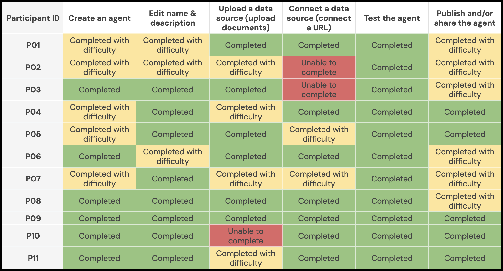

Background & Context
Information workers are increasingly expected to use AI in their workflows to improve productivity. Emerging LLM-based tools, such as agent builders, aim to help information workers with their everyday tasks.
However, in the current landscape, LLM-based tools are hard to use, easily fail, and often overpromise on value. Information workers need further guidance when creating tools such as AI agents. Furthermore, they may not understand what benefits LLM tools could provide in their workflow.
Defining the Problem
Microsoft 365 Agent Builder is a no-code/low-code tool that lets information workers create custom AI agents for everyday tasks. As part of a semester-long research engagement, I collaborated with a team to evaluate the tool and provide recommendations to Microsoft to improve the product.
When considering what questions should guide our research, we considered how information workers may have different skill levels and comfort with using AI tools. Thus, we aimed to ensure that workers of multiple skill levels could feel confident developing and using these tools.
In addition, we had to consider different areas of research. With guidance from our client, we developed two domains that we wanted to further explore: users' mental models of AI, and the actual guidance users expect when using and interacting with an agent-building tool.
- What kind of support do users need when building and using AI agents?
- What mental models do users bring to the agent-building experience?
Finally, our task was to evaluate our research questions using different methods and present prioritized product recommendations to the client team.
Measuring Success
To evaluate our findings, we defined three success criteria:
- Surface recurring patterns in the support users expect
- Identify where current M365 Agent Builder falls short
- Produce actionable design recommendations
Our work surfaced a clear pattern: users could get an agent running, but they couldn't figure out what it was actually capable of — and they couldn't trust what it was doing. We translated those findings into three prioritized product recommendations.
My Contributions
- Co-designed the research plan, including the semi-structured interview guide and usability test protocol
- Moderated user interviews and usability testing sessions over Zoom
- Led affinity mapping and thematic analysis of interview transcripts
- Contributed to competitive analysis evaluation across seven agent-building tools
- Co-authored findings and product recommendations delivered to Microsoft
Methods
To evaluate our research questions and develop our product strategy recommendations, we selected three user research methods. These helped us understand the current landscape and context of agent building platforms, then dive deeper into actual users' experience and thought processes.
Competitive Analysis
Beginning with a competitive analysis helped us to identify gaps and opportunities in current tools. By testing these tools ourselves, we gained an understanding of what worked in agent creation, and what features users value.
We evaluated seven agent-building tools across the full agent lifecycle — from creation to monitoring to refinement:
We scored each tool on seven tasks: create, customize, connect data, test, publish, monitor health, and update. This gave us a benchmark for where Microsoft 365 Agent Builder stood relative to the market.
User Interviews
Our next step was developing specific user testing protocols to evaluate Microsoft 365 Agent Builder. These interviews helped us understand user perceptions and expectations. Our goal with these interviews was to understand users' current mental models around LLM models and AI agents.
We conducted 11 semi-structured interviews (30 minutes each, via Zoom) with employed adults across consulting, finance, technology, and education, spanning ages 18–64 and a wide range of AI familiarity. Questions explored participants' current AI usage, their expectations for agent behavior, and what their ideal agent building experience would look like.
Usability Testing
Immediately following each interview, participants completed a usability test of M365 Agent Builder. We gave them a realistic scenario (building an agent for a NASA employee to summarize meeting documents and draft emails) and asked them to complete six tasks mirroring the agent building lifecycle. We coded each task as Completed, Completed with Difficulty, or Unable to Complete.
These usability tests helped us observe the current flow and how it aligned with user expectations, and ultimately refine our product strategy recommendations. Our goal was to identify what specific support users need when creating and interacting with an AI agent.
Key Findings
Our findings directly informed our product recommendations. We analyzed the results from each research method to deliver specific areas for action within M365 Agent Builder to the Microsoft client team.
Competitive Analysis: Post-Launch Lifecycle is a Market-Wide Gap
All seven tools handled agent creation and testing well. However, gaps emerged further in the lifecycle:
Agent customization: Only 2 of 7 tools succeeded. The other five — including Claude Agent SDK, Vertex, Gumloop, Lindy, and Replit — failed.
Editing and updating: 2 of 7 tools failed, including Google Gemini Agent Builder.
Data source integration: 2 of 7 had issues, including Google and Claude Agent SDK.
Examining the current landscape helped us understand potential areas where Microsoft could position itself as a leader in the market.
User Interviews: Key Themes from Qualitative Analysis
After conducting user interviews, we analyzed our results through affinity mapping. Three key themes emerged:
Collaborative onboarding. Users didn't want to figure out what to build alone. They wanted the system to ask questions and guide them toward useful configurations.
"What are you going to use the agent for? And then recommend tools to install on the agent proactively. That would be very helpful."
Verbal prompting and follow-up suggestions. After building the agent, users expected the agent to tell them what context it needed to accomplish tasks, and to proactively surface what actions it could do.
"If I tell it what I want it to do, I would expect it to come back and tell me what it needs to know in order to do it."
Transparency into agent reasoning. Users wanted to understand what the agent was doing, not just see an output. Without visibility into its logic, they couldn't trust or correct it.
"I just like to see what the agent is thinking... because if I find that it's going off in a direction I don't want, I want to trace back."
Usability Tests: Friction Throughout the Core Flow
Usability tests were evaluated by scoring participants' performance on six tasks in the workflow of agent creation. These tasks were refined from the competitive analysis our team conducted.

Testing was the one task everyone completed easily — but nearly everything before and after it created friction. The ambiguous "Describe" and "Configure" prompts confused most users, who expected a chat-based setup flow modeled on their experience with tools like ChatGPT.
Our Proposed Solutions
From our user research, we identified three key product recommendations for the team to implement.
Conversational Onboarding. Replace the ambiguous "Describe" and "Configure" prompts with a step-by-step guided setup that asks users what they want their agent to do, then recommends relevant tools and configurations. Surface use-case templates earlier and more prominently — Google's Gemini Agent Builder does this well on its landing page.
Capability Discovery Guidance. After the agent is built, users need to know what to do with it. Add example prompts on the main agent page and surface follow-up suggestions mid-conversation — such as "attach a document," "paste a URL," or "edit agent instructions" — so users can explore capabilities without guessing.
Process Transparency. Add thinking-state indicators so users can see what the agent is doing as it works. Make workspace integrations explicit and visible — users were surprised the agent wasn't already connected to their files and assumed integrations that didn't exist. Claude Code's step-by-step status feedback is a useful model here.
Impact & Reflection
Our findings were delivered to Microsoft as a formal research report with prioritized recommendations. The research confirmed that the core usability gaps in M365 Agent Builder weren't unique to the product — they reflected a market-wide failure to support users through the full agent lifecycle.
If I were to extend this work, I would run a follow-up study testing the proposed conversational onboarding flow to see whether it measurably reduces task abandonment. I would also want to explore whether transparency features (thinking states, integration visibility) change users' trust in agent outputs over time.
Research conducted in partnership with Microsoft as part of a graduate UX research program.